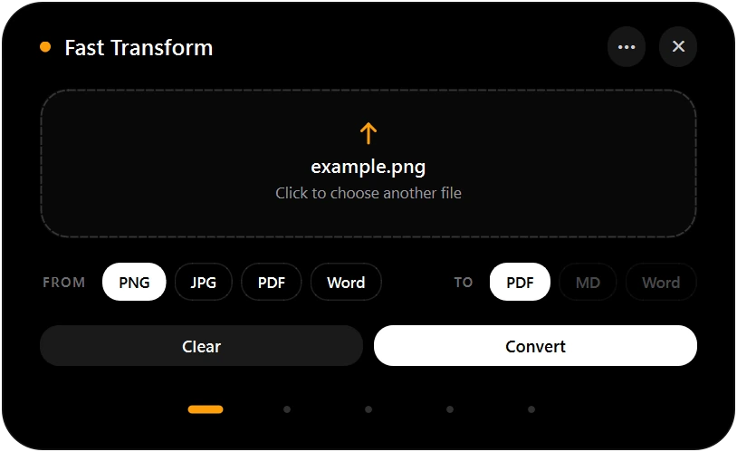
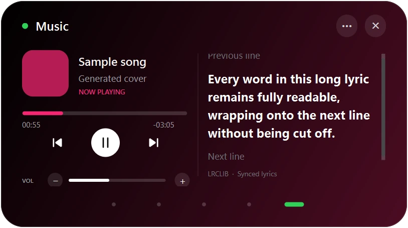
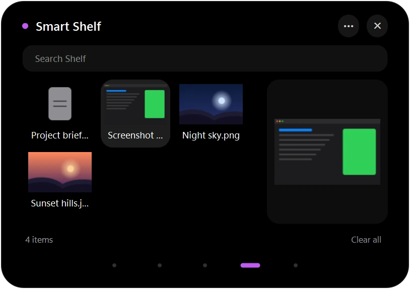
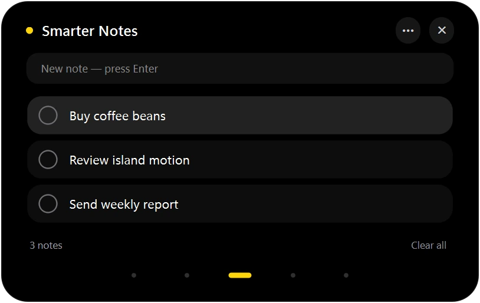
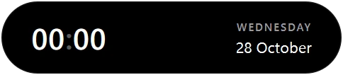

Fast Transform
Drop a file onto the island and convert it locally: PNG/JPG → PDF, PDF → Markdown or Word, Word → PDF. Nothing is uploaded.

Kai lives at the top of your screen. Hover to see the time, click to reach your clipboard, notes, files, music and quick file conversion — then it slips away again.
Free · Windows 10/11 64-bit · needs Python 3.12 (setup is one double-click)
Five tools, one island
Drop a file onto the island and convert it locally: PNG/JPG → PDF, PDF → Markdown or Word, Word → PDF. Nothing is uploaded.

Control whatever is playing in Windows — Spotify or any media app. Seek, volume and synced lyrics, tinted by the album cover.

New screenshots and downloads land here automatically. Drag them straight into any app.

Type, press Enter, tick it off. A tiny checklist that saves itself.

Your last 80 copied texts and links, searchable. Press Enter to paste back into the app you were using.
A small black pill with two eyes that follow your pointer. Hover for the clock, move away and it tucks itself back in.

Free and open source. Download, run setup once, and Kai is on your desktop.
The full Kai app for your Windows PC.
Private by design
%LOCALAPPDATA%\Kai on your PC.Yes. Kai is a free, open-source personal project by RicoMitra. There is no paid tier.
Kai is built with Python and Qt. Setup Kai.cmd uses Python 3.12 once to install Kai's own private copy of its packages; Kai.exe then starts it without a console window.
Yes — Music controls any player that shows up in Windows media controls, including Spotify. Lyrics come from LRCLIB when available.
Kai is native, not a browser app. It sleeps as a small pill, animations stop when idle, and music libraries load only while Music is open.
Kai.exe is a small unsigned launcher. Choose More info → Run anyway, or read its source in tools/KaiLauncher.cs first.
Right-click the Kai icon in the tray and choose Quit Kai. To uninstall, delete the Kai folder and %LOCALAPPDATA%\Kai.